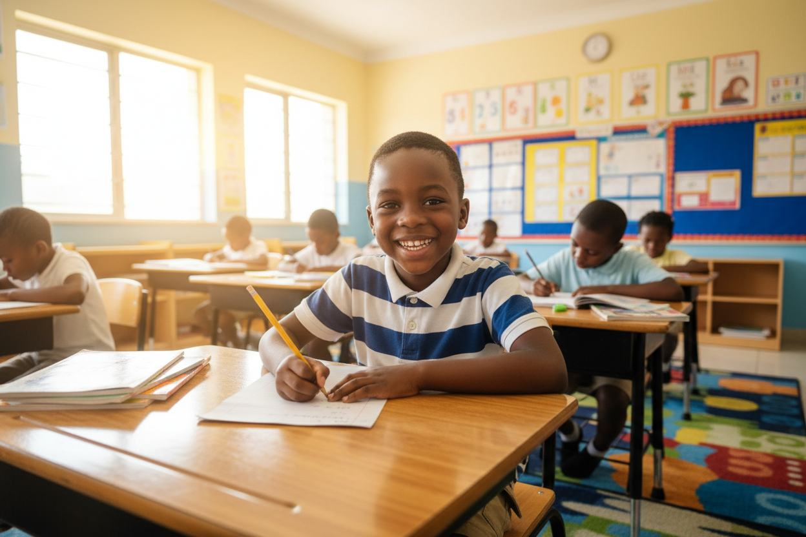
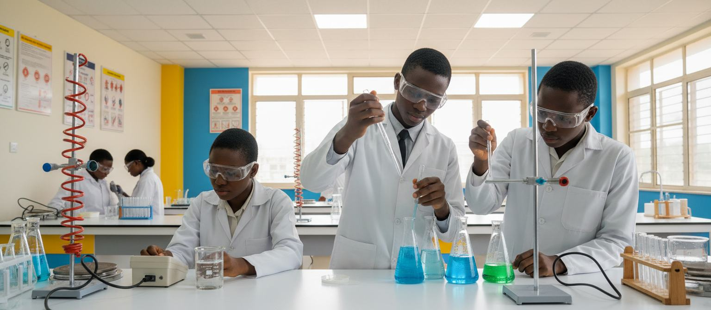
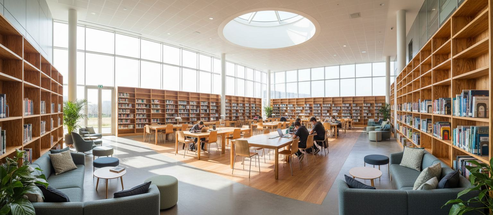
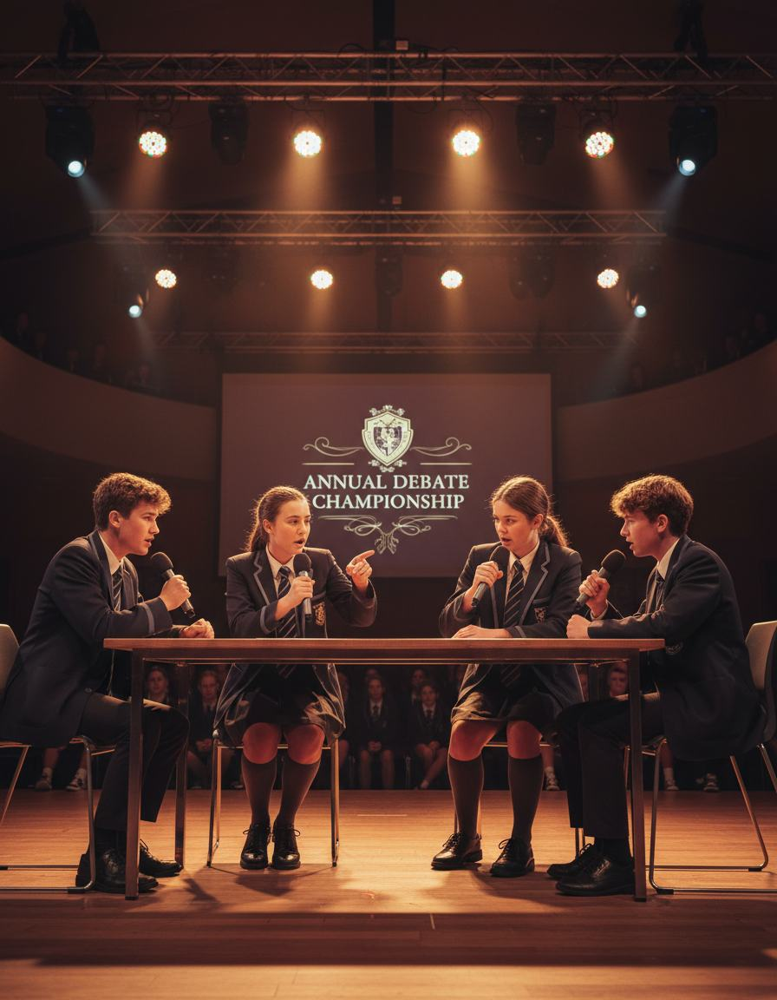
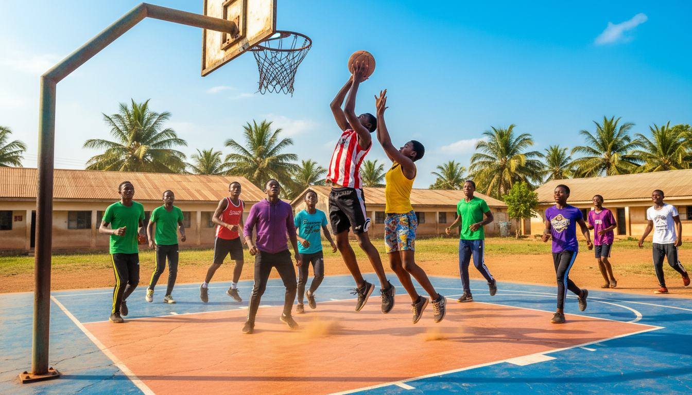

Preparing confident leaders for WAEC, NECO & beyond
Our Secondary School combines rigorous academic scholarship, specialized STEM and Humanities tracks, leadership mentorship, and optional modern boarding to prepare students aged 11–17 for top universities worldwide.

Structured progression from JSS1 to SSS3
Led by Mr. T. Okafor (Head of Secondary), our six-year secondary journey transitions students from broad interdisciplinary mastery to focused pre-university specialization.
Broad Mastery & BECE / Checkpoint Readiness
Junior Secondary students explore 14+ core and vocational subjects, building strong analytical habits ahead of the Basic Education Certificate Examination (BECE) and Cambridge Lower Secondary Checkpoint.
- Core Mathematics, English, Integrated Science & Basic Technology
- French, Business Studies, Civic Education & Nigerian Languages
- Python programming, digital literacy, and laboratory practicals
Specialized Tracks & WAEC / NECO / UTME Excellence
In Senior Secondary, learners select a specialized academic stream aligned with their university aspirations, supported by intensive exam clinics, mock exams, and career counseling.
- Science Track: Physics, Chemistry, Biology, Further Maths, Technical Drawing
- Humanities & Arts Track: Literature-in-English, Government, History, CRS/IRS, French
- Commercial Track: Financial Accounting, Economics, Commerce, Data Processing
Equipped for scientific inquiry, debate, and leadership
Secondary students learn directly from subject-matter specialists in university-grade facilities.

Dedicated Physics, Chemistry & Biology Labs
Weekly practical sessions ensure students master titration, microscopy, optics, and experimental analysis long before WAEC practical exams.

Research Library & Exam Prep Clinic
Over 10,000 volumes, past-question archives, digital research terminals, and faculty-led WAEC, NECO, JAMB, and SAT tutorials.

Prefectship, Debate & Career Guidance
Student council leadership, regional debate championships, entrepreneurship clubs, and individualized university admissions advising.
A safe, structured, and caring home away from home
Our Lagos Mainland flagship campus features modern, purpose-built male and female boarding houses designed to cultivate independence, disciplined study habits, and lifelong friendships.
